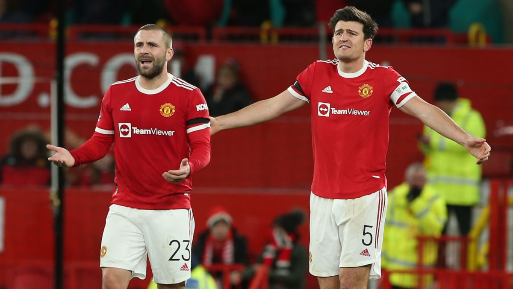
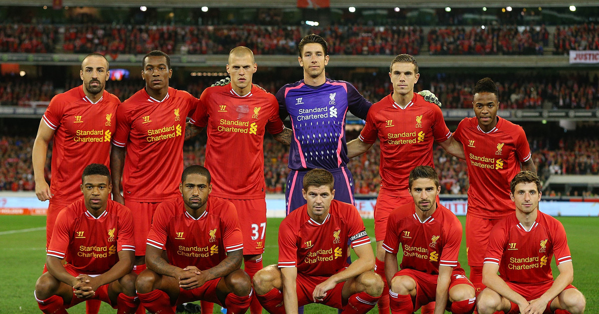
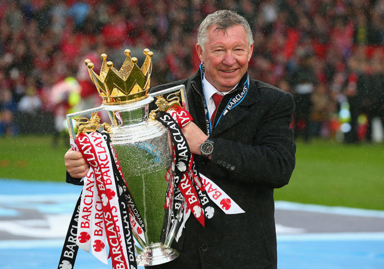
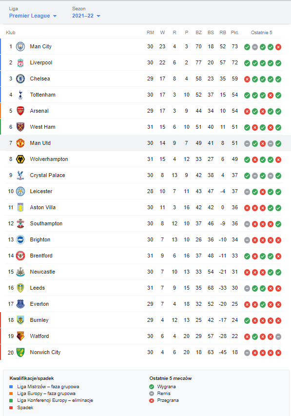

Moim hobby jest oglądanie meczów piłki nożnej.
Moją ulubioną ligą rozgrywek piłkarkich jest angielska, Premier League.

Klub, któremu kibicuje to Manchester United.

Największym rywalem mojego klubu jest Liverpool FC.

Rywalem derbowym mojego zespołu jest Manchester City.

Tymczasowym menagerem Manchesteru United jest Ralf Rangnick.
Prawdopodobnie, po zakończeniu sezonu stałym menagerem zostanie Erik Ten Hag.
Pomimo zakończenia pracy w 2013 roku, sir Alex Fergusson pozostaje najlepszym i najbardziej rozpoznawalnym trenerem w historii klubu.

Kapitanem drużyny jest Harry Maguire.
Zespół zajmuje obecnie 7 miejsce w tabeli.
